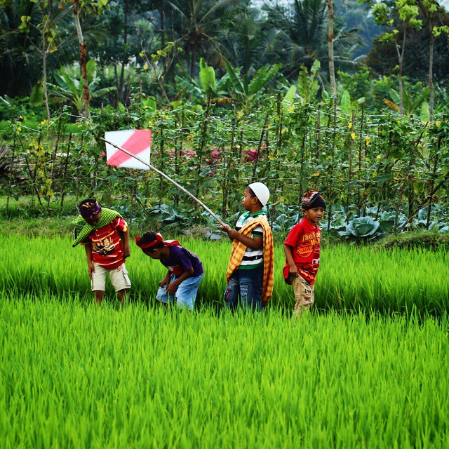

Selamat Datang ke Permainan Rimakata!
Tentang Permainan
Selamat kembali ke zaman "Good Old Days"! Permainan Rimakata ini mengajak anda meneroka kekayaan suku kata Bahasa Melayu dalam suasana nostalgia sawah bendang dan gunung-ganang yang mendamaikan.
Uji ketajaman minda dan kemahiran Bahasa Melayu anda dengan meneka dan melengkapkan suku kata terakhir bagi setiap perkataan yang diberikan.
Cara Bermain
- Mula Permainan:
- Klik butang "Mula Main" di bawah.
- Daftarkan nama anda untuk dicatatkan di Papan Markah Teratas!
- Pilih Tahap Kesukaran (Asas, Sederhana, atau Maju). Setiap tahap mempunyai had masa dan jumlah kesalahan "Merah" yang berbeza.
- Semasa Bermain:
- Perkataan akan dipaparkan dengan suku kata terakhirnya dikosongkan (contoh: PERMAI _ _ _ ).
- Taip huruf demi huruf menggunakan papan kekunci untuk melengkapkan suku kata tersebut.
- Perhatikan pemasa! Semakin pantas anda meneka dengan betul, semakin tinggi bonus mata yang diperoleh.
- Setiap tekaan huruf yang salah akan menambah kiraan "Kesalahan Merah". Jangan sampai had maksimum!
- Perlukan Bantuan?
- Klik butang "Paparkan Makna" untuk mendapatkan klu tentang perkataan (akan ada sedikit penalti pada markah).
- Matlamat Anda:
- Kumpul markah sebanyak mungkin dengan meneka suku kata terakhir dengan tepat dan pantas!
Selamat berjuang dan semoga berjaya menguasai suku kata!